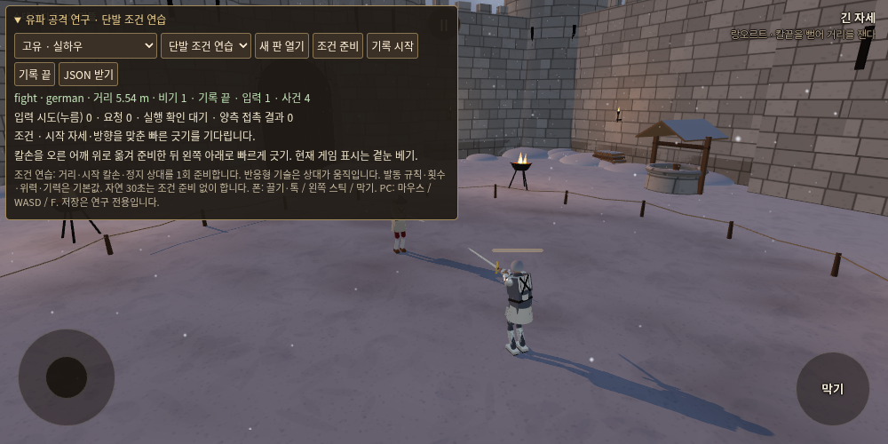

Stillness · 고정 기준 88a96061 · 2026-11-01 · 밸런스 수치 변경 없음유파 공격 19계열 · 1차 실측
카바치오네의 이른 탭 소모와 일본 손목치기의 칼길을 먼저 점검할 근거가 나왔습니다. 강한 비기는 피해량과 준비 기회를 나누어 보아야 합니다.
684개 단발/조건 비교, 456개 자동 입력 내성, 최대30초 대련120판을 완료했습니다. 비기 잠재252개·이탈리아 경로/심화108개는 별도입니다. 자동 대본의 탐색 결과이며 실제 인간 성공률은 아직 측정하지 않았습니다.
19종 직접 연습상세 결과와 원본
각 수치는 두 상대를 합친12판의 원래 판당 평균입니다. 30초 이전에 끝난 판도 포함했습니다. 혼합과 노림은 같은 관측/반응에서 선택 우선순위만 다릅니다. 서로 다른 무기·운전기로 시험했으므로 유파 간 승률이나 인간 사용 빈도로 읽지 마십시오.
우선 확인할 세 가지
카바치오네는 정확한 자동 입력도8개 중4개만 실행됐습니다. 맞댐이 새로 잡혀 이른 탭으로 기회를 잃는 사례가 있었고, 특정 거리에서는 일반 탭보다 상처가 작았습니다.
손목치기는 단발18개 모두 실행됐지만 유효 상처가 없었습니다. 대련에서도 실행18회·유효 상처0입니다. 닿는 것과 날로 상처를 내는 것을 구분해 경로를 봐야 합니다.
인콰르타타는 보통 거리6쌍에서 준 상처0.940 대 일반 탭0.079, 받은 상처0.274 대0이었습니다. 자신도 맞지만 더 큰 피해를 주는 공격적 교환 후보로 남겼습니다.
원본 해석
죽음의 일격은 상처량0이어도 의식 손실로 기절시킬 수 있었습니다. 내부 dead 상태를 생리적 사망과 합치지 않았습니다. 제비 베기는 정적 단발에서 첫 베기가 맞아 조건이 없었고, 실제 대련에서는 발동과 상처가 있었습니다. 미발동을 위력0으로 보지 않았습니다.
같은 기하·입력의 반복은 독립 표본이 아닙니다. 1초/5초 양측 피해, 준비와 회수, 사망/기절/넘어짐/사지/기력을 상세 원본에서 구분해 볼 수 있습니다. 본판 수치는 바꾸지 않았습니다.

본판과 저장을 분리한 연구 화면. 단발 조건 준비와 자연30초를 선택하고 JSON을 내려받을 수 있습니다.